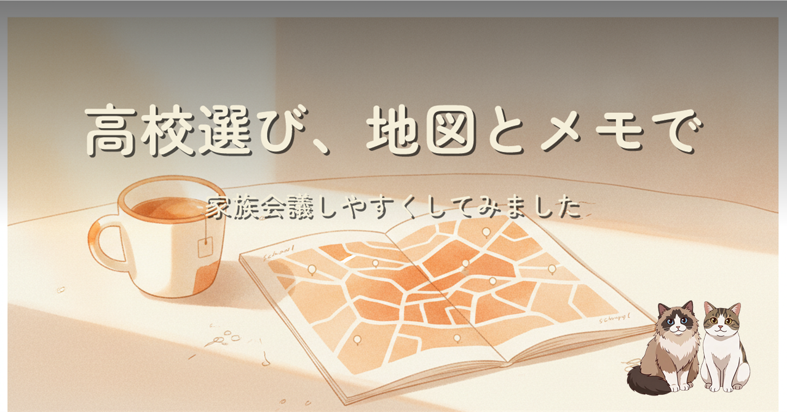
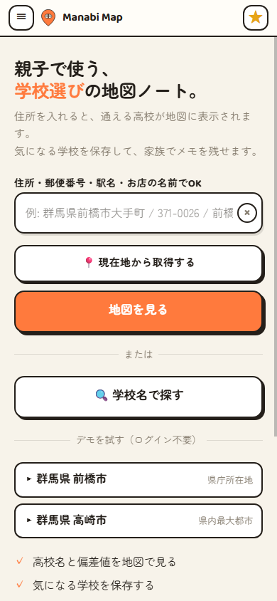
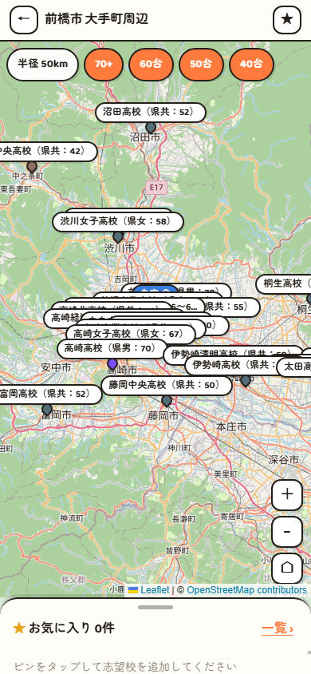

住所を入れると、通える範囲の高校が地図にピンで表示されます。気になる学校はお気に入りに保存でき、文化祭や説明会で見たこと、通学経路を歩いた感想を、家族でメモとして残せます。掲載偏差値は商用サイトからの転載ではなく公的資料に基づく独自推計。群馬県内 79 校を掲載し、群馬県版として無料公開しました。
高校受験の情報収集は「散らばる」ことが問題だと考えました。偏差値はサイト A、通学時間は地図アプリ、文化祭の感想は家族の記憶頼み。これを 1 か所にまとめたのが Manabi Map です。序列を煽らない見せ方、進路・教育系に限定した広告方針、LINE ログインでの家族間メモ共有まで、非エンジニアの保護者にも読みやすい形で書きました。

